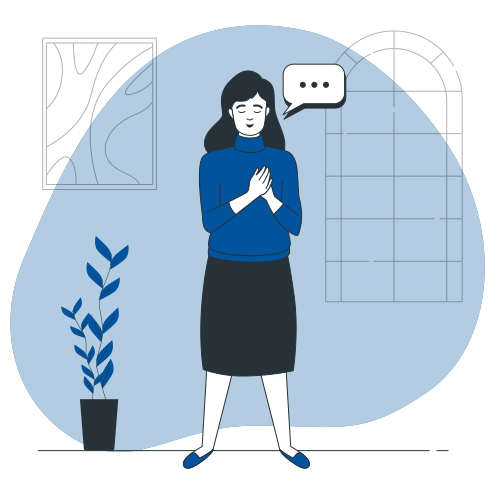
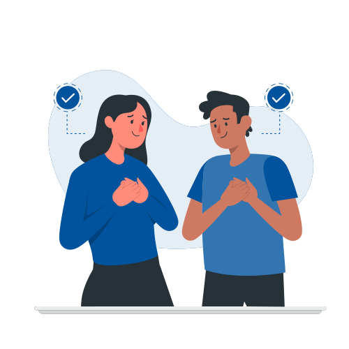
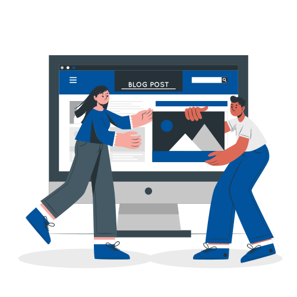

{kind=link}
Quelles sont les competences sociales ?
Sont des compétences social et comportementale relative au quotient emotionnel.
Il y a des avantages distincts à avoir des compétences sociales bien développées.
La communication interpersonnelle :
Est un moyen d'expression basé sur l'interaction entre deux personne (interlocuteur), elle vise à transmettre un message verbal et non-verbal.
La communication non-verbal :
Est un moyen d'exprexion basé sur les gestes, communication du corps.il vise à transmetre un message non verbal.
La communication Para-verbal:
correspond à l'utilisation de la voix,la voix donne un sens au message verbal.

L'ecoute Active :
et un moyen de communication utilisé par le Récepteur pour comprendre le sens de Feedback et collecter les information ,ce concept est Dévloppé par le psychologue Americaine (CARL ROGERS ).

Feedback :
Ce concept a été developer par ( NORBER WEINER )dans ces travaux relatifs au cybernetique=la science des système.

les freins à la communication :
Est un acte difficile dans la mesure ou á chaque étape du processus peut intervenir un certain nombre de perturbation (appeler "obstacle" ou "freins")

Pour les étudiant de OFPPT il y a un blogge pour ecrice un article qui concerne soft skills et social skills...
